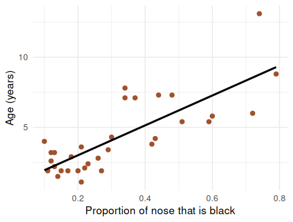
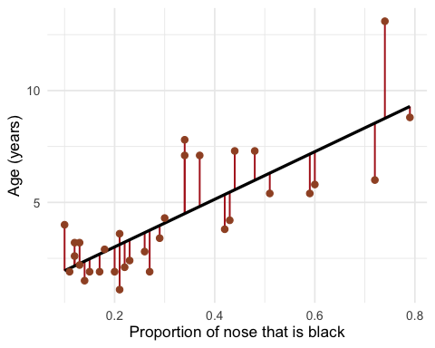
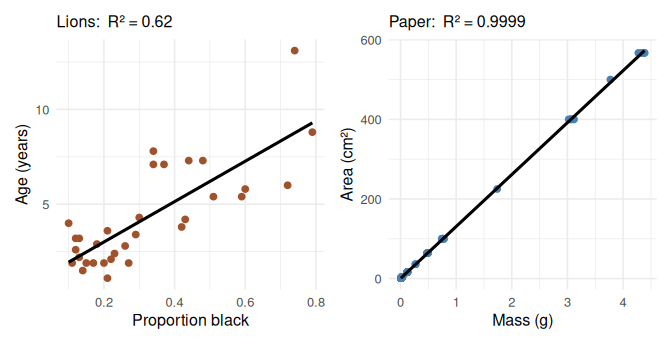
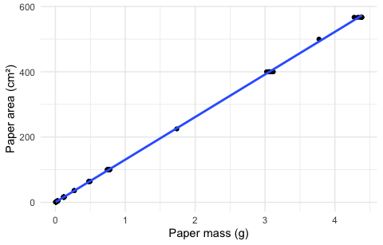

Lecture 11 — Linear Regression
Using one measurement to predict another (Whitlock & Schluter Ch. 17)
Bill Perry
2026-10-05
Where we left off (Lectures 09–10)
- Five steps — hypotheses → check normality → check variance → run the test → interpret and report
- Welch’s t-test compares the means of two groups
- Pseudoreplication — average up to the thing you actually sampled before you test
- Our leaves — mean leaf mass did not differ between the shady and sunny sides
- Our sugar maples — shady-side leaves were significantly larger in area than sunny-side leaves on the same tree
Note
✅ Where today comes in
- A t-test compares two groups.
- Today we ask a different question:
- can one number predict another number?
- we weighed our leaf tracings, but what we actually want is leaf area in cm²
Goals for Today
- Understand what a linear regression does: fit a straight line, \(\hat{Y} = a + bX\)
- See what a residual is, in a real plot
- Fit a model with
lm() - Read and interpret the
summary()output — slope, p-value, R² - Check the residuals the way R shows them to you
- Use
predict()to turn a tracing mass into a leaf area - Report the result in a standard sentence
- Tools today:
lm()— fit the linesummary()— read the resultplot(model)— check the residualspredict()— make predictionsgeom_smooth(method = "lm")— draw the line
- Reading:
- 📖 Whitlock & Schluter, Ch. 17 — Regression
- §17.1 Linear regression
- §17.3 Testing the slope
- §17.4 R²
- §17.5 Assumptions
- 📖 Whitlock & Schluter, Ch. 17 — Regression
- Today’s naming:
- models →
_model - plots →
_plot
- models →
🧩 Chunk 1 of 3 · What Regression Does
We will cover:
the question regression answers,
the equation \(\hat{Y} = a + bX\),
what a residual is,
what R² tells you,
and the assumptions.
No code in this chunk — just the idea.
What Is Linear Regression?
Linear regression fits the best straight line through a cloud of points so you can predict one number (Y) from another number (X).
| Role | Variable | On the plot |
|---|---|---|
| Explanatory (X) | what you can measure easily | x-axis |
| Response (Y) | what you actually want to know | y-axis |
X is usually the easy measurement. Y is the expensive one. Regression gives you an equation that converts X into Y.
📖 W&S §17.1 p. 540–541
Regression vs. the t-test:
| Test | The question |
|---|---|
| t-test | Do two groups have different means? |
| Regression | Does X predict Y? |
Use regression when:
- both variables are numeric
- X could reasonably predict Y
- you want an equation, not just a yes/no
A Real Example from the Textbook
W&S Example 17.1 — “the lion’s nose.” 32 male lions of known age.
Aging a wild lion is hard — you have to have watched it since it was a cub.
But a male lion’s nose darkens as it ages, and you can photograph a nose from a truck.
- X = proportion of the nose that is black — easy
- Y = age in years — what you want
Fit the line once on lions of known age, and from then on you can estimate a lion’s age from a photograph.
📖 W&S §17.1, Example 17.1
Our Version of the Same Problem
The problem: we want leaf area in cm², but we don’t have a leaf-area meter. We have a balance.
The fix — a calibration curve:
- Cut paper squares of known area (1, 4, 16 … 567 cm²)
- Weigh each square
- Fit the line: area ~ mass
- Trace a leaf onto the same paper and weigh the tracing
- Put the tracing mass into the equation → predicted leaf area
Why it works: paper from one stock has a constant area per gram, so mass and area move together almost perfectly.
| Known area (cm²) | Squares weighed |
|---|---|
| 1 | 25 |
| 4 | 32 |
| 16 | 24 |
| 36 | 3 |
| 64 | 7 |
| 100 | 14 |
| 225–567 | 13 |
118 paper squares in all.
Remember paper_mass_g in our leaf data? That is the tracing mass. By the end of today it becomes an area.
The Regression Equation
\[\hat{Y} = a + bX\]
| Symbol | Name | What it means |
|---|---|---|
| \(\hat{Y}\) | predicted Y | what the line says Y should be |
| a | intercept | Y when X = 0 — where the line crosses |
| b | slope | how much Y changes per 1 unit of X |
Ours will read:
\[\widehat{\text{area}} = a + b \times \text{mass}\]
📖 W&S §17.1 pp. 543–545
The slope is the useful one.
b = the extra cm² you get for each extra gram of paper
That is just the area density of the paper stock — and it is the number that does the converting.
The intercept is a bookkeeping number.
a = the predicted area of a piece of paper weighing nothing
Physically that should be 0. A small value near zero is fine; it is measurement noise, not biology.
What Is a Residual?

Red = the residuals for the lion data.
A residual is one point’s miss:
\[\text{residual} = \text{observed} - \text{predicted}\]
- A point above the line → positive residual (that lion was older than its nose suggested)
- A point below the line → negative residual
- A point on the line → residual of 0
The line R gives you is the one that makes those red segments as small as possible overall. That is all “least squares” means — and R does the work.
📖 W&S §17.1 p. 542
R² — How Tight Is the Fit?

R² runs from 0 to 1. It is the fraction of the variation in Y that the line accounts for.
| R² | Reads as |
|---|---|
| 1.00 | points sit on the line |
| 0.62 | X explains 62% of the variation |
| 0.00 | the line tells you nothing |
Both of these are good regressions. Nose blackness really does predict a lion’s age — just with scatter, because lions vary. Paper is manufactured to be uniform, so it has almost none.
In biology, R² of 0.3–0.7 is normal and useful. Don’t expect 0.99.
📖 W&S §17.4 p. 555
R² and the p-value Answer Different Questions
| The question it answers | |
|---|---|
| p-value | Is there really a relationship, or could this slope be chance? |
| R² | How tightly do the points follow the line? |
You can have a significant slope with a low R² — a real relationship with a lot of scatter. That is most of ecology.
Important
The slope is the hypothesis test.
H₀: the slope is 0 — X does not predict Y
Hₐ: the slope is not 0 — X does predict Y
summary() gives you the p-value for exactly that test, and we will find it on the next few slides.
📖 W&S §17.3 pp. 551–553
Assumptions of Regression
Four things need to be roughly true for the p-value and the intervals to mean anything (W&S §17.5):
| # | Assumption | How you check it |
|---|---|---|
| 1 | Linear — Y really does follow a straight line | the scatter plot, then plot(model) panel 1 |
| 2 | Independent — one observation doesn’t depend on another | your study design |
| 3 | Equal variance — the scatter is about the same all the way along | plot(model) panels 1 and 3 |
| 4 | Normal residuals — the misses are bell-shaped | plot(model) panel 2 |
Important
Check the residuals, not the raw data.
Normality here is about the misses — the red segments — not about Y itself. Y is supposed to go up with X; of course it isn’t bell-shaped.
The good news: once you have a fitted model, plot() draws all of these for you. No extra code.
Same habit as the t-test: check → decide → report.
📖 W&S §17.5 pp. 557–560
🧩 Chunk 2 of 3 · Fit It and Read It
We will cover: loading the paper data, the scatter plot, fitting with lm(), and reading the summary() output line by line.
🛑 After this chunk: Activity Parts 1–4 (load, plot, fit, read the summary).
Load Libraries and Data
Two columns, 118 rows: area_cm2 is the known area of each square, mass_g is what it weighed.
Always Plot It First

Three plain lines. aes(x = , y = ) puts the explanatory variable on x and the response on y, and geom_point() draws the dots.
What you are looking for:
- Straight? → a line is the right tool
- Scatter the same all the way along?
- Any point way off on its own?
Here: straight, tight, nothing strange. Fit the line.
Note
Never fit a regression you haven’t looked at. A curve, a funnel, or one wild point all change what you should do next.
Fit the Model with lm()
Nothing prints. lm() hands back a model object that is holding the answer — summary() is what shows it to you.
The formula is the whole trick:
- Y — the response — goes on the left of
~ - X — the explanatory variable — goes on the right
~reads as “is predicted by”
So area_cm2 ~ mass_g is “area is predicted by mass.”
Warning
⚠️ Get the order wrong and R will still answer. lm(mass_g ~ area_cm2) runs fine — it just fits the question you didn’t ask.
summary() — the Whole Output
Call:
lm(formula = area_cm2 ~ mass_g, data = paper_df)
Residuals:
Min 1Q Median 3Q Max
-7.2774 -0.3059 -0.1221 0.2264 8.7592
Coefficients:
Estimate Std. Error t value Pr(>|t|)
(Intercept) 0.2792 0.1812 1.541 0.126
mass_g 130.5234 0.1473 885.964 <2e-16 ***
---
Signif. codes: 0 '***' 0.001 '**' 0.01 '*' 0.05 '.' 0.1 ' ' 1
Residual standard error: 1.764 on 116 degrees of freedom
Multiple R-squared: 0.9999, Adjusted R-squared: 0.9999
F-statistic: 7.849e+05 on 1 and 116 DF, p-value: < 2.2e-16There are only four numbers in here that you need, and we will take them one at a time:
- the slope (
mass_g→Estimate) - the intercept (
(Intercept)→Estimate) - the slope’s p-value (
mass_g→Pr(>|t|)) - the R² (
Multiple R-squared)
Reading It — 1. The Coefficients Table
Coefficients:
Estimate Std. Error t value Pr(>|t|)
(Intercept) 0.2792 0.1812 1.541 0.126
mass_g 130.5234 0.1473 885.964 <2e-16The Estimate column is the equation.
(Intercept)= 0.28 → that is amass_g= 130.52 → that is b, the slope
So the fitted line is:
\[\widehat{\text{area}} = 0.28 + 130.52 \times \text{mass}\]
Say the slope out loud, with units:
Every extra 1 gram of this paper is another 130.5 cm² of area.
That is the conversion factor we came for.
The other three columns, in one line each:
| Column | What it is |
|---|---|
Std. Error |
how uncertain that estimate is |
t value |
Estimate ÷ Std. Error |
Pr(>|t|) |
the p-value for that row |
📖 W&S §17.3 p. 551
Reading It — 2. The Two p-Values
(Intercept) 0.2792 ... 0.126
mass_g 130.5234 ... <2e-16The slope row is the one that matters. Pr(>|t|) for mass_g is <2e-16 — R’s way of writing “smaller than I can print.”
- H₀: the slope is 0 → mass tells you nothing about area
- p < 0.001 → reject H₀. Mass predicts area.
The intercept row: p = 0.126, so the intercept is not distinguishable from 0 — exactly what physics says it should be. A piece of paper with no mass has no area.
Tip
Which p-value do I report?
The slope’s. That is the biological question. Nobody reports the intercept’s p-value unless zero means something special.
Note
Never write p = 0. When R prints <2e-16, you write p < 0.001.
Reading It — 3. R² and the Bottom Line
Residual standard error: 1.764 on 116 degrees of freedom
Multiple R-squared: 0.9999, Adjusted R-squared: 0.9999
F-statistic: 7.849e+05 on 1 and 116 DF, p-value: < 2.2e-16- Multiple R-squared = 0.9999 → mass explains 99.99% of the variation in area. That is manufactured paper, not biology.
- F-statistic with 1 and 116 DF, p < 2.2e-16 → the overall test of the model. With one X it tells you the same thing as the slope’s p-value.
- Residual standard error = 1.76 cm² → a typical miss is about 1.8 cm².
Where the df come from:
- 1 = one explanatory variable
- 116 = 118 squares − 2 numbers we estimated (a and b)
Use Adjusted R-squared once you have more than one X; with a single X, report Multiple R-squared.
Important
R² = 0.9999 does not mean “everything is fine.” It means the points are close to the line. Whether the assumptions hold is a separate question — and we check it two slides from now.
→ ACTIVITY 11 Parts 1–4 now
🛑 Do Activity Parts 1–4 now
Load the paper data, make the scatter plot, fit lm(area_cm2 ~ mass_g), and pull the slope, the p-value, and R² off the summary output — writing them in your answer boxes.
🧩 Chunk 3 of 3 · Plot It, Check It, Use It
We will cover: drawing the fitted line, reading plot(model), using predict() on one tracing and then on a whole column, and writing the result up.
🛑 After this chunk: Activity Parts 5–9 (plot the line, check the residuals, predict, report).
Draw the Line
One extra line. geom_smooth(method = "lm") fits the same regression again, just for drawing, and adds:
- the fitted line
- a grey 95% confidence band around it
The band is narrowest in the middle of the data and flares at the ends — the line is pinned down best where you have the most data. Here it is so narrow you can barely see it.
Note
geom_smooth() defaults to a wiggly curve. method = "lm" is what makes it a straight regression line.
The Same Plot, Dressed Up

This is the version you’d put in a report — and it is only two additions to the plot you already made:
labs()— real axis labels with unitstheme_minimal()— drop the grey background
Tip
Don’t type this today. Get the plain geom_point() + geom_smooth(method = "lm") working first. Labels and themes are the last thing you add, once you know the plot is right.
Check the Residuals — plot(model)
par(mfrow = c(2, 2)) just says “put the next four plots in a 2×2 grid.”
| Panel | Name | Checks |
|---|---|---|
| 1 | Residuals vs Fitted | linear? equal scatter? |
| 2 | Normal Q-Q | residuals bell-shaped? |
| 3 | Scale-Location | equal scatter again |
| 4 | Residuals vs Leverage | any one point running the show |
Panel 1 is the one to look at first.
- ✅ Good: a flat, shapeless cloud around 0
- ❌ Curved: the relationship isn’t straight
- ❌ Funnel: the scatter grows as Y grows
What Our Residual Plot Is Telling Us
Look at panel 1 again. The points fan out — a 1 cm² square misses by hundredths of a cm², a 567 cm² square misses by several cm².
That is a funnel: assumption 3 (equal variance) does not hold.
# A tibble: 10 × 2
area_cm2 biggest_miss
<dbl> <dbl>
1 1 0.35
2 4 0.59
3 16 0.65
4 36 0.96
5 64 1.3
6 100 3.09
7 225 2
8 400 7.28
9 500 7.39
10 567 8.76Important
A great R² and a bad residual plot can live together. R² says the points are near the line. The residual plot says the size of the miss depends on how big the square is — which it does, because a balance has percentage error, not fixed error.
So what do we do?
- For predicting a leaf tracing (0.1–0.4 g) we are down in the tight end of the line, where a typical miss is a fraction of a cm². The calibration is fine for the job.
- The confidence intervals at the big-square end are the part you shouldn’t trust.
- The proper fix — fitting on a log scale, or weighting the points — is a graduate topic. Knowing to look, and saying what you saw, is the undergraduate job.
Predict One Tracing
1
18.29144 An 0.138 g tracing is about 18.3 cm² of leaf.
predict() takes two things:
- the model you fitted
newdata =— a small data frame of the X values you want predictions for
Warning
⚠️ The column in newdata must have the same name as in the model. The model was built on mass_g, so newdata needs a column called mass_g. Call it mass and R stops with “object ‘mass_g’ not found.”
This beats doing the arithmetic yourself — no copying the slope, nothing to mistype.
Predict with an Interval
fit lwr upr
1 12.28736 8.777018 15.79771
2 18.29144 14.781578 21.80131The 0.138 g tracing is 18.3 cm², somewhere between about 14.8 and 21.8 cm².
interval = "prediction" adds two columns:
fit— the predictionlwrandupr— the 95% range
Two kinds of interval:
interval = |
Range for | Width |
|---|---|---|
"confidence" |
the average area of all tracings this heavy | narrower |
"prediction" |
one particular tracing | wider |
For a single real leaf, use "prediction".
📖 W&S §17.2 pp. 548–550
Convert a Whole Column of Tracings
# Load our leaf data ----------------------------------
leaf_df <-
read_excel("data/2026_09_03_data_sci_leaf_area.xlsx") %>%
clean_names()
# Turn every tracing mass into an area ----------------
leaf_df <- leaf_df %>%
mutate(leaf_area_cm2 =
predict(paper_lm_model,
newdata = tibble(mass_g = paper_mass_g)))
leaf_df %>%
select(teams, shade, mass_g, paper_mass_g, leaf_area_cm2)# A tibble: 53 × 5
teams shade mass_g paper_mass_g leaf_area_cm2
<chr> <chr> <dbl> <dbl> <dbl>
1 12345 sunny 0.4 0.21 27.7
2 12345 sunny 0.48 0.21 27.7
3 12345 sunny 0.34 0.21 27.7
4 12345 sunny 0.65 0.24 31.6
5 12345 sunny 0.27 0.15 19.9
6 12345 sunny 0.43 0.34 44.7
7 12345 shady 0.39 0.29 38.1
8 12345 shady 0.45 0.25 32.9
9 12345 shady 0.6 0.23 30.3
10 12345 shady 0.57 0.28 36.8
# ℹ 43 more rowsThis is the payoff. paper_mass_g was the mass of each leaf’s tracing. Now every leaf has a leaf_area_cm2.
The one fiddly bit is the same rule as before: predict() wants a column called mass_g, so we hand it tibble(mass_g = paper_mass_g) — our tracing masses, under the name the model knows.
Note
The NAs are honest. One team never weighed their tracings, so those leaves have no area. predict() passes the missing value straight through instead of inventing a number.
Was the Area Different Between Sides?
# A tibble: 2 × 3
shade n mean_area
<chr> <int> <dbl>
1 shady 21 36.7
2 sunny 19 36.0About 37 cm² on the shady side and 36 cm² on the sunny side — the same story the t-test told us about mass, now in the units we actually wanted.
Note
✅ Why this matters. “Shady leaves weigh 0.02 g more” means little to a reader. “Shady leaves are about 1 cm² bigger” is a sentence an ecologist can use.
How to Report a Regression
The template — fill in from your summary() output:
[What predicted what] (linear regression: F(df₁, df₂) = ___, p ___, R² = ___). The fitted equation was Y = ___ + ___ × X.
Ours:
Paper mass was a very strong predictor of paper area (linear regression: F(1, 116) = 784,900, p < 0.001, R² = 0.9999). The calibration equation was area = 0.28 + 130.52 × mass. Residual scatter increased with square size, so intervals for the largest squares should be treated with caution.
Where every number comes from:
| In the sentence | In summary() |
|---|---|
| F and both df | the F-statistic: line |
| p | that same line |
| R² | Multiple R-squared |
| intercept | (Intercept) → Estimate |
| slope | mass_g → Estimate |
Always include: the test name, F with both df, p, R², and the equation. Add a line about the assumptions you checked.
📖 W&S §17.3 p. 553
→ ACTIVITY 11 Parts 5–9 now
🛑 Do Activity Parts 5–9 now
- Draw the line and run
plot(model) - Predict one tracing, then convert the whole
paper_mass_gcolumn into areas - Write your results sentence
- Your answers in the script are what you hand in
What We Learned Today
The ideas:
- Regression fits a line so you can predict Y from X
- \(\hat{Y} = a + bX\) — the slope converts X into Y
- A residual is one point’s miss: observed − predicted
- R² = how tight the fit is; p = whether the slope is real
- Check the residuals — and say what you saw
The code:
lm(Y ~ X, data = df)— fit itsummary(model)— slope, intercept, p, R²geom_smooth(method = "lm")— draw itplot(model)— check itpredict(model, newdata = ...)— use it
- Hand in: your finished
scripts/11_regression.R— the code is given; your answers are graded
📖 W&S Ch. 17:
- §17.1 Linear regression · §17.2 Prediction
- §17.3 Testing the slope · §17.4 R²
- §17.5 Assumptions
Up next — Lecture 12:
- Pulling real climate data into R with
GSODR - Summarizing daily weather into yearly values
- The same
lm()— temperature predicted by date- the slope becomes a rate of change per year
- and you write that regression yourself